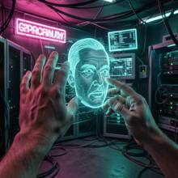
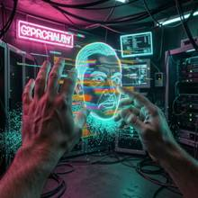

Style — Please generate a picture of a man touching an unstable holographic pr
Please generate a picture of a man touching an unstable holographic projection with his hands without sensing gloves in a cyberpunk-style room.

Judge — Direct
- PASSStyle — The image is set in a room filled with neon signs featuring what appear to be Asian characters, multiple computer monitors, exposed pipes and wiring, and a dark, gritty aesthetic dominated by blue and pink neon lighting. This combination of elements is characteristic of the cyberpunk style.
- PASSAction - Hand (Character/Anthropomorphic) — A man is depicted with his hands positioned around a glowing, translucent screen. His right hand is outstretched with fingers spread, appearing to touch the surface of the holographic projection, which glows brightly at the point of contact. His left hand is held slightly below, also oriented towards the screen. The visible parts of his hands and fingers are well-formed without any anatomical distortions.
- PASSCompound - Imagination — The image shows a man physically interacting with a floating, transparent holographic projection that displays data and graphs. This act of touching a non-physical light projection is an imaginative concept that does not occur in reality.
- FAILGrammar - Negation — The prompt specifies that the man should be 'without sensing gloves'. The man in the image is clearly wearing black, fingerless gloves on both of his hands. This directly contradicts the negative instruction in the prompt.
Judge — Continuum
- PASSStyle — The image displays a room with features characteristic of the cyberpunk style, including server racks, a multitude of visible wires and cables, computer monitors displaying data, and neon lighting in pink and cyan.
- PASSAction - Hand (Character/Anthropomorphic) — The image shows a first-person view of two hands reaching out and making contact with a holographic projection of a face. The fingers are spread and appear to be interacting with the light-based image, which is distorting and pixelating around the points of contact. The hands are anatomically correct.
- PASSCompound - Imagination — The image depicts the physically impossible action of touching a holographic projection, which is made of light. The hands are shown interacting with the non-solid, glitching projection as if it were a tangible interface.
- PASSGrammar - Negation — The two hands depicted in the foreground are bare. There are no gloves, sensors, or any other coverings on the hands, clearly showing the skin, veins, and wrinkles.
What the agent did
Thinking
Let me break down the prompt: - A man touching an unstable holographic projection - Both hands - Without sensing gloves (i.e., bare hands, no gloves) - Inside a cyberpunk-style room So the key elements: man, bare hands (no gloves), touching an unstable holographic projection (glitchy, flickering, distorted hologram), cyberpunk-style room (neon lights, dark, futuristic interior). "Unstable" hologram — glitching, fragmented, flickering, distorted edges, artifacts, static, partially dissolving. Bare hands are important — many cyberpunk images default to wearing gloves. Let me explicitly emphasize bare hands. Let me generate with flux2-klein, default steps/guidance. Aspect ratio: probably 1024x1024 or widescreen 1536x1024. Let's go with widescreen for a cinematic vibe — but size is controlled by the harness. The notes say size is controlled by the harness... actually, in the benchmark it says "don't set the seed. Size and seed are controlled by the harness." Hmm, but I can set width/height myself. The policy says size is controlled by the harness, so I should probably leave it at the default 1024. Actually, "size... is controlled by the harness" suggests I shouldn't override width/height. Let's use the default 1024x1024. Let me write a detailed visual prompt: "Close-up of a man with bare hands (no gloves, skin visible on hands and wrists) reaching into a flickering, glitching holographic projection, fingers about to touch a distorted hologram of a human face made of cyan light, hologram unstable, fragmented, glitching with static artifacts and horizontal tear lines, flickering, partially dissolving into particles, cyberpunk-style room, dark interior with neon pink and teal lighting, glowing neon signs, cables, server racks, reflective surfaces, rain-streaked windows in background, cinematic lighting, high detail" Let me generate.
Step 1 — `generate_image`
{
"model": "flux2-klein",
"prompt": "Cinematic close-up of a man with completely bare hands, no gloves, visible skin on his hands and wrists, reaching out and touching an unstable holographic projection of a human face made of flickering cyan light. The hologram is glitching and fragmented, with horizontal tear lines, static artifacts, distorted wavering geometry, and edges dissolving into scattered light particles. Cyberpunk-style room: dark interior lit by neon pink and teal glow, glowing neon signs, exposed cables, server racks, small monitors with data, moody atmosphere, shallow depth of field, cinematic lighting, ultra detailed."
}Result img_0

Thinking
Let's check the result: - A man's bare hands touching the hologram — yes, the hands are bare (no gloves visible). Good. - Unstable holographic projection — the hologram is a wireframe human face, with a few glitch particles. Pretty stable, could be made a bit more glitchy, but there are some particles and distortion. Passable. - Cyberpunk-style room — neon signs, server racks, monitors, cables. Good. - Touching with both hands — the left hand is open near the hologram, and the right hand is touching the face with fingers. Good. Issues: 1. The neon sign text is garbled (as usual), but that's not a problem — the prompt doesn't require specific text. 2. The hologram looks fairly stable — "unstable" would be better if it were more glitchy/flickering. There are some particles. Could push the glitch further, but it's reasonably within acceptable range. Let's inspect the hand region to confirm there are no gloves and that the fingers look good. Also let's check the hologram. Actually, the image is pretty good. Main concern: the "unstable" aspect. The hologram looks fairly stable and clean. To make it more unstable/glitchy, a slight edit might be worth it. But there's a risk that editing would degrade the good hands. Let's first inspect the region to check hand quality and glove details.
Step 2 — `inspect_region`
{
"image": "img_0",
"roi": "the man's hands reaching toward the hologram"
}Result img_1
Step 3 — `inspect_region`
{
"image": "img_0",
"roi": "the holographic face"
}Result img_2
Thinking
On close inspection, the following can be confirmed: - The hand is completely bare — no gloves, skin, veins, and fingernails are visible. - The right hand's finger is touching the hologram's face — a clear "touch" contact point. - The hologram is a cyan-colored scanline face, with some particle dissipation. It's fairly stable, but has scanlines and some glitch particles around the edges. The prompt's requirements: 1. A man ✓ (the hand is a man's; the face isn't visible but that's fine — actually "a man touching... with his hand" — the image shows the hand, and it's reasonable to interpret it as the man's own hand. Good.) 2. Touching an unstable holographic projection ✓ — the hologram is a bit stable, with a few glitch elements. It could be made more unstable. 3. With his hand ✓ both hands. 4. Without sensing gloves ✓ bare skin. 5. Cyberpunk-style room ✓. The main gap: "unstable" — the hologram looks quite clean/stable. An edit could be made to push the glitch/flicker/unstable effects further. Let's try an edit that makes the hologram more unstable: glitch bands, tear lines, fragmented/dissolving portions, flickering. The risk is that the edit degrades the hand. However, the target is the hologram region. Let's try an edit_image with a targeted instruction: "Make the holographic face more unstable: add glitch tear bands, horizontal RGB offset slices, parts of the face dissolving into static and scattered particles, flickering scanlines, and distorted wavering geometry, while keeping the hand and room unchanged." This is a reasonable single edit. Let's execute it.
Model
The base image is solid — bare hands (no gloves), clear contact with the hologram, cyberpunk room. The one weak point: the hologram looks fairly stable, while the prompt calls for it to be *unstable*. Let me push the glitch effect further.
Step 4 — `edit_image`
{
"image": "img_0",
"model": "flux2-klein",
"prompt": "Make the holographic face more unstable and glitching: add horizontal RGB-offset tear bands and slicing glitch lines across the face, make the lower half and edges flicker and dissolve into static and scattered cyan particles, add wavering distorted geometry and momentary dropout gaps. Keep the man's bare hands, the touching finger contact, and the cyberpunk room exactly the same."
}Result img_3

Thinking
The edit made the hologram way more unstable — glitch bands, RGB-offset tear lines, dissolving into particles, static noise. The hands are still bare, the contact is preserved, and the room is maintained too. Let me inspect the hand region of img_3 to confirm there are no gloves and the contact is preserved.
Model
The glitch edit worked well — the hologram now has RGB-offset tear bands and dissolves into particles. Verifying that hands and contact were preserved:
Step 5 — `inspect_region`
{
"image": "img_3",
"roi": "the man's hands reaching toward the hologram"
}Result img_4
Thinking
Checking with the cropped image: - Both hands are completely bare — visible skin, veins, and fingernails. No gloves. ✓ - The right index finger is touching the holographic face — contact point is clear. ✓ - The hologram is very unstable: RGB glitch bands, tear lines, dissolving into particles. ✓ - Cyberpunk room: neon signs, server racks, monitors, cables. ✓ All elements of the prompt are in place. img_3 is the best version. I'll mark this as the best and stop.
Model
All confirmed: both hands are completely bare (no gloves, skin and veins visible), the right index finger clearly touches the glitching hologram, and the unstable projection is characterized by RGB tear bands, dissolving particles, and scanline flicker within a neon-lit cyberpunk room. This is a complete match.
Step 6 — `mark_best`
{
"image": "img_3",
"reason": "Bare ungloved hands clearly touching an unstable, glitching holographic face (RGB tear bands, dissolving particles) in a neon-lit cyberpunk server room \u2014 all prompt elements verified in crops."
}Thinking
Marking complete. The run can now be terminated. Let me summarize the results for the user.
Model
Done. The final image (marked as best) shows: - **A man's bare hands** — no gloves, skin and veins visible — reaching toward the projection, with the right index finger making direct contact on the holographic face - **An unstable holographic projection** — a cyan wireframe face glitching with horizontal RGB-offset tear bands, static slices, and edges dissolving into scattered light particles - **A cyberpunk-style room** — dark server interior with a pink neon sign, teal glow, exposed cables, racks, and glowing monitors The first generation already had the bare hands and room right, but the hologram looked too stable, so I made one targeted edit to inject the glitch/dissolution effect — verified via close-up crops that the hands, contact point, and room were preserved.